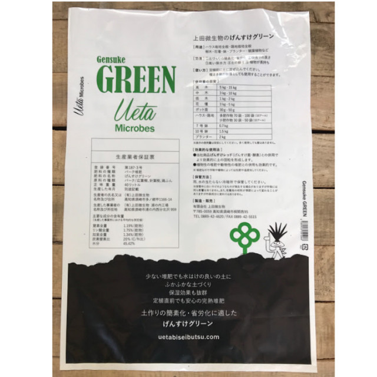
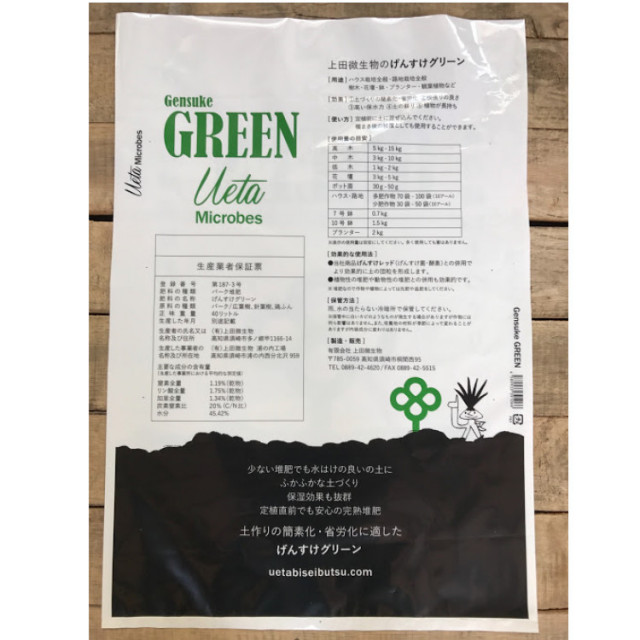
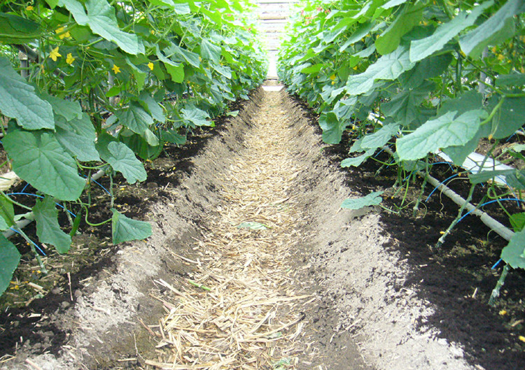
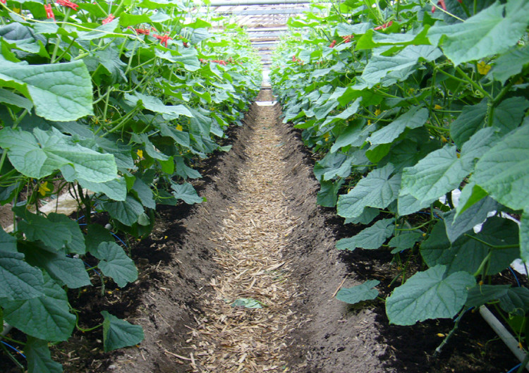

土が硬い、水はけが悪いなどの
土壌改善に
げんすけグリーンは、土が柔らかくなるのに必要な有機質、糖分、たんぱく質を多く含んだCN比の低い完熟酵素堆肥です。リグニンやセルローズなども含む完熟の母材は微生物（GS菌群）の住処にもなり、多くの土壌生物バランスを整える力を持っています。 定植前に土に混ぜ込んで使用してください。種まき後の被覆としても使用することができます。また、「げんすけレッド」と合わせて使用することでより大きな成果を発揮します。
こんな方におすすめです！
- 土が硬い
- 水はけが悪い
- 定植時の活着を良くしたい
- リン酸・カリ(P・K)をもっと効率よく吸収させたい
GS菌とは当社が独自で開発した有用微生物菌群（※）です。
※）硝化細菌（亜硝酸菌、硝酸菌）、光合成細菌、繊維分解菌、放線菌、各種硝化酵素（タンパク質分解酵素、脂肪分解酵素、炭水化物分解酵素、アルコール分解酵素） 他
| 内容量 | 40リットル |
|---|---|
| 内容成分 | GS菌、天然ミネラル（微量要素）、ビタミンＢ１・Ｂ２ バーク堆肥、鶏糞、馬糞、フスマ、ヌカ （GS菌の量は、げんすけアタック、げんすけＲＥＤより少ないです。） |
| 取扱い | ポリ袋が破けるのでやさしく取り扱うこと。 冷暗所で保管。 雨や水にあてないようにしてください。 |
特徴＆効果
少ない堆肥で水はけの良いふかふかな土に
- 土づくりの簡素化・省労化
- 根の張りが良くなる (毛細根も良くできます)
- 有機コロイド生成により、土の保肥力を高める
- 水はけ、水もちの良い土に
- 土を蘇らせる
- 植物が長持ちする

使用例
★ マルチ前の畝上 表層散布も可能！

マルチをする前に10a/20袋程度を表層散布。

水がかかることによりGS菌群活性、有機物分解が進み、炭酸ガス濃度は朝方3,200PPMまで上昇。蒸散が促進されたためか、翌日には葉が少し上がりました。
使い方
定植前に土に混ぜ込んでください。
種まき後の被覆としても使用することができます。
| 使用量の 目安 |
|
| 効果的な 使用法方 |
|